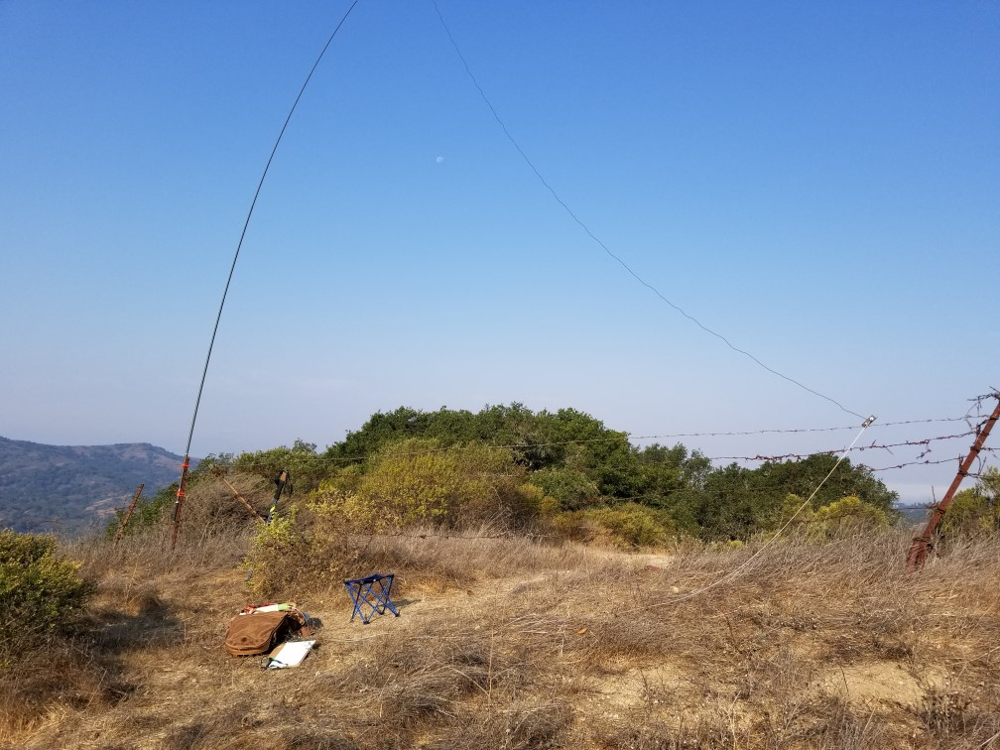

Hello fellow DX’ers, As some of you might or might not know, SOTA is a passion of mine. I do chasing and activating. Today I went to the top of a hill facing San Pablo Reservoir, it’s called Abrott Benchmark. I set up my FT891 100W and my end fed on a 10m Chinese fishing pole. After spotting myself on 40m I worked about 20 stations CW and moved to 20m. On the third pile-up I hear a clear F4… My brain stopped, might be missing a K, W, N, A something. The signal was strong, so I asked for a repeat. It came back again F4 this time I copied all but the last digit (my brain froze again on excitement). I asked for a third repeat: F4WBN. I gave him a 599 (which probably stroke him as why so many repeats?). This is my first DX on SOTA. Literally 100W and a wire (from a very quiet place, 1000ft high and no obstructions). Yes, the fence was my counterpoise. Here was my setup:  Good Dxing, Roberto K6KM |